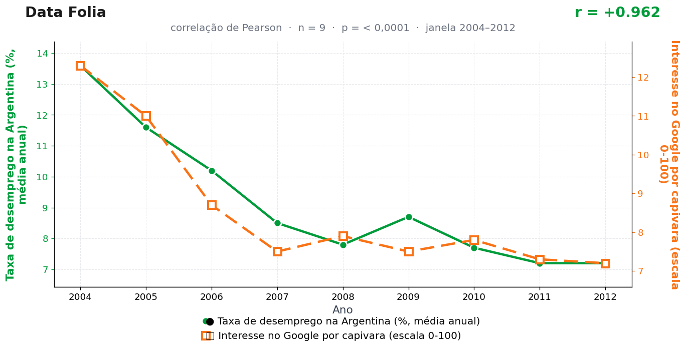

Post de 10/08/2026
A teoria
A economia argentina trabalha sob ciclos de tensão conhecidos. Quando o emprego fica mais difícil, cresce a procura por símbolos de estabilidade que não cobram explicação nem prazo.
A capivara ocupa esse cargo com excelência. Sua imagem comunica permanência, comunidade e resistência silenciosa; ela atravessa água e notícia pesada com a mesma expressão.
O interesse digital por capivaras funciona como fuga organizada para um lugar de tranquilidade. O mercado aperta, a busca abre uma margem de rio, e a calma volta a circular.
Consultada à beira do rio, a capivara manteve sua tradicional política de não comentar indicadores macroeconômicos de países vizinhos. O silêncio, como sempre, foi interpretado como confirmação.
A teoria é ficção; a correlação é real: r = 0,96 (n = 9, p < 0,001).
Os dados por trás

- Taxa de desemprego na Argentina (%, média anual) — 9 pontos anuais, período 2004–2012. Fonte: World Bank / INDEC.
- Interesse no Google por capivara (escala 0-100) — 9 pontos anuais, período 2004–2012. Fonte: Google Trends (pytrends).
Como as correlações deste site são encontradas — e por que você não deve confiar nelas — está explicado na nossa metodologia.
Por que isso acontece?
As duas séries caem juntas por razões próprias. A Argentina passou 2004–2012 se recuperando da crise de 2001: o desemprego desceu de 13,6% para 7,2% num movimento longo e contínuo. Já a série do Google Trends para "capivara" cai nos primeiros anos por um motivo bem menos zoológico: no início da década, a base de usuários do Google no Brasil era pequena e crescia rápido, e a renormalização da escala 0–100 produz números altos e instáveis no comecinho de quase qualquer termo.
Ou seja: uma curva conta a história de um país saindo da crise; a outra conta a história da internet brasileira amadurecendo. O r = 0,96 apenas registra que as duas histórias têm o mesmo formato de descida — tendências temporais coincidentes, o tipo mais comum de correlação espúria.
Séries do Google Trends merecem desconfiança redobrada em janelas antigas: elas medem proporção de buscas numa população de usuários que mudou completamente de tamanho e perfil. Correlacionar isso com desemprego é correlacionar dois relógios que andam — todos os relógios andam juntos.
Post de 10/08/2026 · publicado também no Instagram @datafolia.